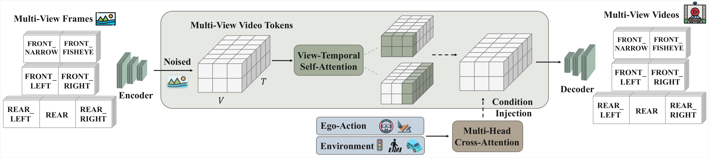
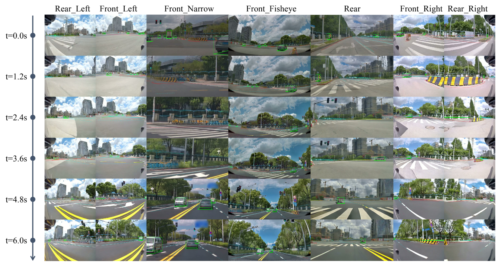
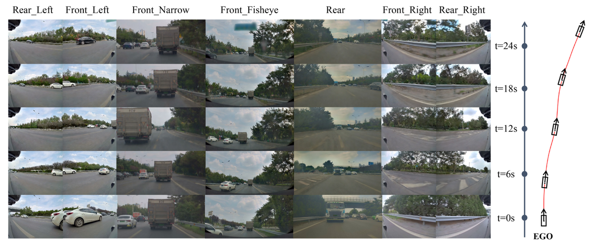
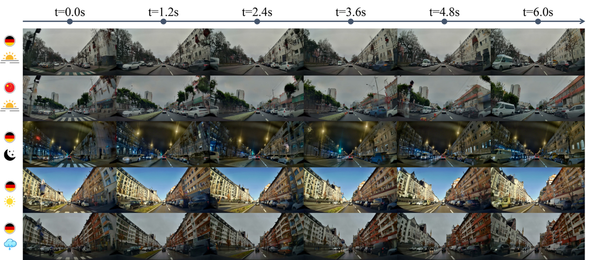

X-World：可控的以自我为中心的多摄像头世界模型，用于可扩展的端到端
简单摘要
端到端自动驾驶领域，视觉-语言-动作（VLA）策略直接将原始传感器数据映射为驾驶动作，对可扩展且可靠的评估方法提出了迫切需求。当前评估流程仍严重依赖真实道路测试，成本高昂、场景覆盖有限且难以复现。现有仿真器虽然提供了一定替代方案，但在长时间范围内保持可控性和稳定性方面仍存在不足。针对这些挑战，该工作提出了一种以动作为条件的多相机生成式世界模型，直接在视频空间中模拟未来观测。给定同步多视图相机历史序列和未来动作序列，该模型能够生成遵循指令动作的未来多相机视频流。为确保可复现和可编辑的场景推演，该模型进一步支持对动态交通参与者和静态道路元素的可选控制，并保留文本提示接口以实现外观层面的控制。其核心是一个多视图潜在视频生成器，专门设计用于在不同控制信号下显式鼓励跨视图几何一致性和时间连贯性。

核心创新
1. 提出以动作为条件的多相机生成式世界模型，直接在视频空间中模拟自动驾驶的未来观测，支持可扩展且可复现的评估。
2. 实现对动态交通参与者和静态道路元素的可选控制，结合文本提示实现天气、时段等外观层面的灵活编辑。
3. 设计多视图潜在视频生成器，通过显式机制保证跨视图几何一致性和长时间推演中的时间连贯性。
4. 支持视频风格迁移功能，在保持动作和场景动态的前提下进行外观转换。
5. 提供流式交互推演接口，适用于端到端自动驾驶系统的在线强化学习闭环仿真。
技术细节

围绕 技术总览，一种生成世界模型，被制定为动作条件多摄像机视频生成模型。(iii) 可选场景控制条件，指定环境的可控方面。我们经常希望模拟器在指定条件下产生相同的未来（或受控的未来系列）。作者这样设计，是为了把这一节的输入、约束和输出关系讲清楚。
为了解决多摄像头自动驾驶场景中几何一致性的关键挑战，我们引入了针对。我们采用适合模态的条件注入机制来平衡表现力和稳定性。
3 方法
围绕 3 方法，一种生成世界模型，被制定为动作条件多摄像机视频生成模型。(iii) 可选场景控制条件，指定环境的可控方面。我们经常希望模拟器在指定条件下产生相同的未来（或受控的未来系列）。作者这样设计，是为了把这一节的输入、约束和输出关系讲清楚。
为了解决多摄像头自动驾驶场景中几何一致性的关键挑战，我们引入了针对。我们采用适合模态的条件注入 lazy' decoding='async' />
3.1 概述
围绕 3.1 概述，一种生成世界模型，被制定为动作条件多摄像机视频生成模型。(iii) 可选场景控制条件，指定环境的可控方面。我们经常希望模拟器在指定条件下产生相同的未来（或受控的未来系列）。作者这样设计，是为了把这一节的输入、约束和输出关系讲清楚。
$$ \hat{\mathbf{X}}_{t+1:t+H}^{1:V} \sim p(\mathbf{X}_{t+1:t+H}^{1:V}\mid \mathbf{X}_{t-L:t}^{1:V}, \mathbf{A}_{t:t+H}, \mathbf{C}). $$
放在“方法”这一部分看，这条式子重点不是孤立地罗列符号，而是交代 这一项中间量 如何承接前面的输入并把结果交给后续步骤。
3.2 模型设计
围绕 3.2 模型设计，为了解决多摄像头自动驾驶场景中几何一致性的关键挑战，我们引入了针对。我们采用适合模态的条件注入机制来平衡表现力和稳定性。
保留了 WAN 2.2 5B 的原始文本调节分支，以支持可选的外观和场景级控制，例如天气、白天和其他全局属性。对于动态和静态控制，我们引入了新的交叉注意力分支。这种解耦减少了条件类型之间的相互干扰并提高了可控性，使模型能够更忠实地遵循每个条件信号。
3.3 状况
围绕 3.3 状况，X-World 提供了一套全面的条件控制接口，可以对驾驶场景生成过程进行细粒度操作。在世界模型中控制自我车辆的动作可以实现以计划的机动为条件的因果一致的未来模拟，这对于闭环规划和安全验证至关重要。与高级命令调节不同，我们的模型通过将一系列未来运动状态（速度、曲率、滚动和俯仰）作为输入来实现直接和连续的控制。作者这样设计，是为了把这一节的输入、约束和输出关系讲清楚。
然而，与动态代理不同，静态元素在推理过程中需要更强的条件遵守，以确保几何和语义的一致性。这种设计确保模型对不同级别的条件控制保持鲁棒性，并且可以在显式静态约束下忠实地生成场景一致的未来。在世界模型中控制相机的内在和外在参数可以生成基于不同传感器配置和视点的未来图像序列。
3.4 I2V/V2V/C2V 统一
围绕 3.4 I2V/V2V/C2V 统一，当 时，模型自然变成视频到视频 (V2V)，以多帧观察历史为条件，生成未来的多视图视频。当 时，模型生成纯粹以提供的动作和其他控制条件为条件的视频，我们将其称为条件到视频（C2V）。C2V 是一种有用的训练副产品，但并不是正式的世界模型，因为它不以当前观察到的状态为条件，因此不会对状态转换进行建模。
4 训练
围绕 4 训练，这一节先处理的是 我们的模型分两个阶段进行训练，如图所示。作者这样设计，是为了先把输入表示、约束条件或中间状态整理成后续模块能直接使用的形式。
4.1 第一阶段：双向 I2V 训练以实现精确的可控性
从WAN继承的参数是直接加载的，而新引入的多摄像头和多条件设置模块是随机初始化的。让 表示要生成的目标潜在视频（例如，未来多摄像机帧的潜在序列），并让 表示调节输入，其中包括历史潜在（当 ）和动作。按照修正后的流程，我们采样并构建数据样本和高斯

$$ \mathbf{y}_t = (1-t)\mathbf{y}_0 + t \mathbf{y}_1 . $$
这条式子是在定义一个可直接计算的中间量：右侧把相对位置、方向、权重或比例关系组合起来，左侧则把这个组合结果记成后续模块要反复使用的变量。
$$ \mathcal{L}_{\text{RF}}(\theta) = \mathbb{E}_{\mathbf{y}_0,\,\mathbf{y}_1,\,t,\,\mathbf{c}} [ \| v_\theta(\mathbf{y}_t, t, \mathbf{c}) - (\mathbf{y}_1 - \mathbf{y}_0) \|_2^2 ]. $$
这条式子给出了噪声预测训练目标：模型在随机时间步接收带噪输入和条件信息，然后尽量把真实噪声估计准确。训练好这一项之后，反向采样时才能稳定地把噪声状态一步步拉回真实场景分布。
4.2 第二阶段：流式长视野模拟的因果少步训练
围绕 4.2 第二阶段：流式长视野模拟的因果少步训练，未来的块是按顺序生成的，每个块仅以过去的上下文为条件（历史观察、先前生成的块以及动作/场景条件）。为了在现实的推出条件下训练第二阶段因果生成器，我们采用了自我强迫。该模型不是根据真实的历史背景（教师强迫/扩散强迫）进行调节，而是根据其自己的自回归部署进行训练。
这会产生由第二阶段因果模型引起的自推出分布。然后，我们使用 DMD（分布匹配蒸馏）损失来优化模型，这可以最大限度地减少自推出分布与第一阶段代表的目标分布之间的反向 KL 散度。通过在自生成环境下匹配教师分布，自强迫可以 9979v2/figure5_full.png'
实验结论
本节评估其作为可控的以自我为中心的多摄像头世界模型的核心能力。这表明可以同时可靠地实

5.1 自我行动可控性
自我动作可控性衡量生成的未来视频是否忠实地反映了在固定的初始场景上下文下给定的自我动作序列的后果。如图所示，产生逼真且物理上合理的未来，并严格遵循命令的操作。在相同的初始帧的条件下，改变自我动作序列会导致相应不同的、连贯的展开，包括平滑转弯和变道。
5.2 动态和静态元件可控性
除了自我控制之外，还支持动态交通代理和静态道路元素的细粒度可控性，这对于可重复的模拟和有针对性的压力测试至关重要。该图通过在生成的视频上叠加投影条件，在 6 代多摄像头上可视化了此功能。这表明可以同时可靠地实施动态和静态控制，为场景编辑和可重现的基准测试提供可控的模拟器界面。
5.3 长视多相机一代
该图展示了多机位流的 24 秒长视距展示。生成的视频在较长的视野范围内保持稳定，保持连贯的运动和外观，而不会出现灾难性的漂移。重要的是，可以超越第一阶段训练中使用的短剪辑设置，使其适合交互式模拟和闭环评估。
5.4 多相机一致性
如图和图所示，保持了很强的跨视图一致性。动态对象在摄像机之间表现出一致的身份和运动，而静态结构（车道拓扑和道路边界）在视图之间保持几何对齐。这些定性结果验证了我们的多相机生成视图时间建模设计的有效性。
5.5 通过文本提示进行全局外观编辑
最后，通过其文本调节分支支持可控外观编辑，该分支主要调节全局样式，而动作和场景元素则由其专用控制分支控制。该图显示了前置 igure>

图 6：保持自我动作和动态/静态元素固定，我们改变文本提示来编辑全局外观，包括区域设置（德国与\中国）、一天中的时间（日落与\夜晚）和天气（晴朗与\下雨）；所有图像均由 生成，包括第一帧理解评价
如果把这篇论文放回问题背景里看，它真正的价值在于：这些挑战激发了现实世界的模拟器，它可以根据提议的行动生成现实的未来观察结果，同时在长期范围内保持可控和稳定。这说明作者不是只补一个局部模块，而是在重新组织问题该怎样被解决。
最能支撑这个判断的，还是实验给出的证据：我们提出了一种以动作为条件的多摄像机生成世界模型，可以直接在视频空间中模拟未来的观察。换句话说，这些设计并不只是概念上更完整，而是实实在在改变了最终结果。
当然，它离真正成熟的方案还有距离：当前方案的局限在于它仍然受制于计算资源、输入质量或场景复杂度，距离真正稳健的大规模部署还有差距。后续更值得继续推进的方向，是 未来继续提升效率、泛化能力以及在更复杂场景下的稳定性。